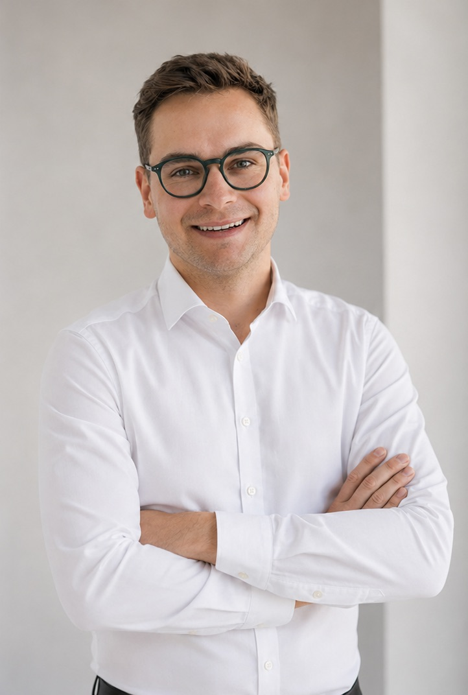

Vom Maschinenbau in die Leistungselektronik: Wechselrichter, Batteriespeicher und die Simulation elektrischer Systeme, mit Leidenschaft für die Energiewende
Ob PV-Projekte, Leistungselektronik oder Batteriespeicher, ich freue mich über den Austausch.